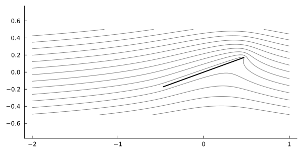

PotentialFlow
a scaffolding for building 2D inviscid models
The main goal of this library is to remove as much boilerplate code as possible from inviscid modeling codes. The core operation in these models is simulating the dynamics of various interacting potential flow elements. In general, the simulation comes down to computing the velocities of the elements then applying some time-marching scheme to evolve the system forward in time. With this in mind, we want to construct a library that makes it
- easy to define new flow elements and behaviors
- straightforward for users to set up a system of elements
- intuitive to probe the state of any element in the system
- easy to define new time-marching schemes to fit the users needs
Installation
PotentialFlow can be installed using the Julia package manager. From the Julia REPL, type ] to enter the Pkg REPL mode and run
pkg> add PotentialFlowThe plots in this documentation are generated using Plots.jl. You might want to install that too to follow the examples in the getting started guide or the Jupyter notebooks. The notebooks can also be run online here.
Basic Usage
Let's create a point vortex and a point source and probe their associated velocity field:
julia> using PotentialFlow
julia> t = 0.0
0.0
julia> vortex = Vortex.Point(1.0 + 1.0im, π)
Vortex.Point(1.0 + 1.0im, 3.141592653589793)
julia> source = Source.Point(1.0 - 1.0im, -π)
Source.Point(1.0 - 1.0im, -3.141592653589793)
julia> induce_velocity(0.0im, vortex, t)
0.25 - 0.25im
julia> induce_velocity(source, vortex, t)
0.25 - 0.0im
julia> induce_velocity(0.0im, (vortex, source), t)
0.5 - 0.5im
julia> induce_velocity([0.0im, 1.0im, 1.0], (vortex, source), t)
3-element Vector{ComplexF64}:
0.5 - 0.5im
0.09999999999999999 - 0.7im
0.5 - 0.5im
Note the all positions and velocities are given in complex coordiantes.
Now let's move on to something more interesting. We'll create a stationary flat plate (bound vortex sheet) and place it in a freestream. In order to enforce the Kutta condition, we also place a starting vortex at -Inf.
using PotentialFlow
using PotentialFlow.Freestreams
using Plots
c₀ = 0.0im # initial centroid position
α = π/9 # angle of attack
L = 1.0 # chord length
N = 128 # number of discretization points
ċ = 0.0 # translation velocity
α̇ = 0.0 # rate of rotation
t = 0.0 # current time
freestream = Freestream(-1.0)
plate = Plate(N, L, c₀, α)
motion = Plates.RigidBodyMotion(ċ, α̇)
Plates.enforce_no_flow_through!(plate, motion, freestream, 0.0)
# We now want to determine the strength of the starting vortex
# to satisfy the Kutta condition at the trailing edge of the plate
_, Γ = Plates.vorticity_flux!(plate, (), Vortex.Point(-Inf, 1.0), t, Inf, 0);
starting_vortex = Vortex.Point(-Inf, Γ)
# Plot some streamlines
x = range(-2, 1, length=100)
y = range(-0.5, 0.5, length=100)
streamlines(x, y, (plate, freestream), legend = false, colorbar = false)
plot!(plate, linewidth = 2, ratio = 1, size = (600, 300))